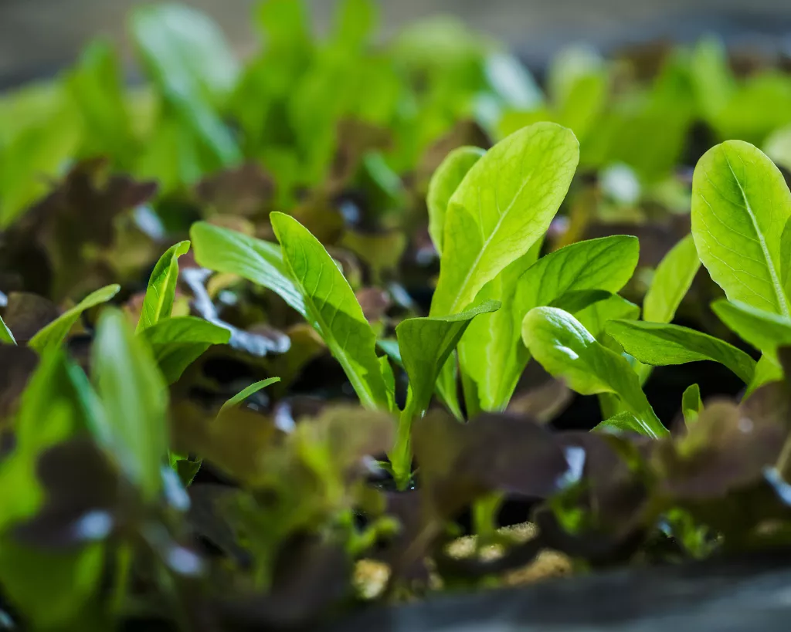

DOCTYPE html>
<html lang="en">
<head>
    <meta charset="UTF-8">
    <meta http-equiv="X-UA-Compatible" content="IE=edge">
    <meta name="viewport" content="width=device-width, initial-scale=1.0">
    <title>Varieties</title>
    <link rel="stylesheet" href="stylesheet.css">

</head>
<body>
    <nav>
        <ul>
            <li><a href="index.html">Home</a></li>
            <li><a href="varieties.html"> Varieties</a></li>
            <li><a href="environments.html"> Environments</a></li>
            <li><a href="contact-us.html">Contact Us</a></li>
        </ul>
    </nav>
    <h1>Varieties of Spinach</h1>

    <table>
        <thead>
           <tr><th colspan = "3">These are some of the varieties of spinanch</th></tr> 
        </thead>
        <tbody>
            <tr>
            <td>long</td>
            <td>Short</td>
            <td>Medium</td>
            </tr>
            <tr>
            <td>
                <a href="https://www.standardmedia.co.ke/farmkenya/article/2001397065/how-to-grow-spinach-from-seeds-to-harvest"></a>
                
            </td>
            <td>
                <a href="https://wikifarmer.com/how-to-grow-spinach-from-seeding-to-harvesting/"></a>
            </td>
            <td>
                <a href="https://growinginthegarden.com/how-to-grow-spinach-7-tips-for-growing-spinach/"></a>
            </td>
            </tr>
            <tr>
                <td>broad Leaf</td>
                <td>Narrow Leaf</td>
                <td>Sharp Leaf</td>
                </tr>
                <tr>
                <td>
                    <a href="https://www.goodhousekeeping.com/home/gardening/a20705736/growing-spinach/"></a>
                    
                </td>
                <td>
                    <a href="https://www.homesandgardens.com/advice/how-to-grow-spinach"></a>
                    
                </td>
                <td>
                    <a href="https://harvesttotable.com/how_to_grow_spinach/"></a>
                </td>
                </tr>
        </tbody>
    </table>  
</body>
</html>
